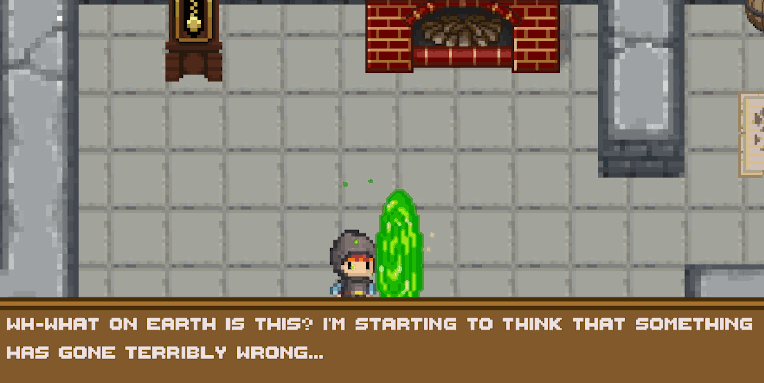

Tämä projekti oli lopputyömme AW Academyn koulutuksessa. Opiskelua oli takana 10 viikkoa
ja aikaa projektille oli kaksi viikkoa. Kokosimme kolmen hengen tiimimme jo koulutuksen
alkuvaiheessa, sillä halusimme kaikki tehdä loppuprojektina pelin Unitylla.
Yhteinen sävel löytyikin äkkiä ja suunnitelma pelille oli valmis.
Ohessa lista asioista, joita itse olen peliin toteuttanut:
Ohessa lista asioista, joita itse olen peliin toteuttanut:
- Tekstiboksin toiminta
- Inventory ja poimittavat tavarat, arkut sekä tavaroiden onkiminen
- Yleinen pelin toiminnallisuus, kuten inventoryn tavaroiden säilyminen scenestä toiseen, vihollisten ja itemeiden instantioiminen vain silloin kun niitä ei ole poimittu tai päihitetty, healthin säilyminen samana scenestä toiseen, kuolema- ja voittoruudut ja tämän jälkeen pelin uudelleen aloittaminen

Miten nämä kaksi viikkoa sitten sujuivat?
Muutama ensimmäinen päivä kului pitkälti tutoriaalien parissa, sillä Unity oli meille kaikille aivan uusi asia. Kun sen käyttäminen alkoi sujumaan, olikin jo huomattavasti helpompaa toteuttaa ideoitaan itsenäisesti.
Tässä muutama highlight projektista:
Muutama ensimmäinen päivä kului pitkälti tutoriaalien parissa, sillä Unity oli meille kaikille aivan uusi asia. Kun sen käyttäminen alkoi sujumaan, olikin jo huomattavasti helpompaa toteuttaa ideoitaan itsenäisesti.
Tässä muutama highlight projektista:
- C#-osaamiseni vahvistui huomattavasti
- Ymmärrys pelien tekemisestä ja Unityn käytöstä avartui
- Tiimityö toimi saumattomasti, olimme kaikki motivoituneita ja pystyimme jakamaan tehtäviä hyvin niin, että kaikilla oli mielekästä tekemistä
- En löytänyt sopivaa spritea ongelle, joten tein sellaisen itse - ensimmäinen pikseligrafiikkani!
Takaisin

GitHub

Pelaamaan!